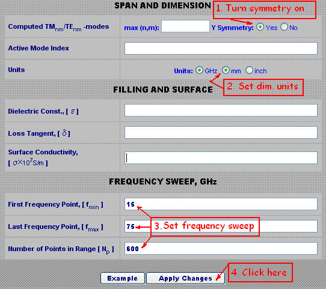
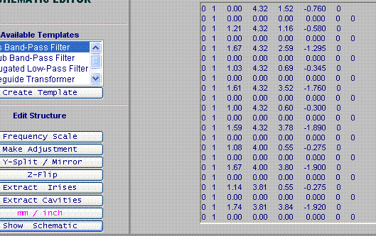
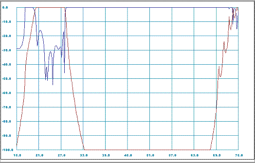
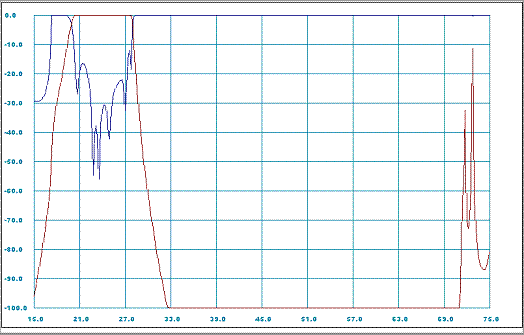
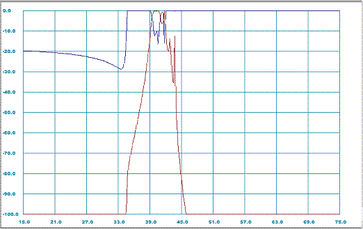
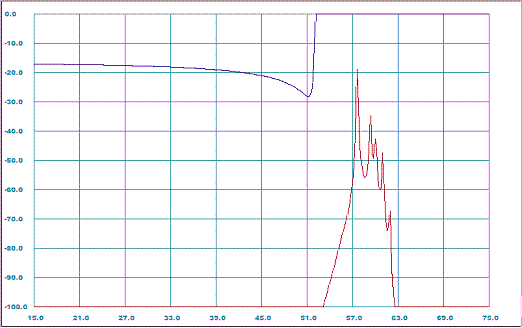
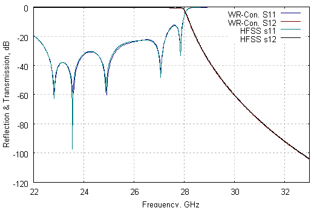

WR-Connect:
Entering Design Parameters and Dimensions
by Rousslan A. Goulouev
Introduction
The idea of using corrugated filters with different broad dimension in order to suppress TEN0 spurious modes is not new. After the conventional corrugated low-pass filters were originated by Conh [1] and improved by Levy [2], engineers already tried to use cascades of corrugated filters with different layout of spurious. The idea of cascading actually worked but with insertion loss, overall mass and size increased. The first publication on using broad dimension discontinuity in a single corrugated filter was released by W. Hauth, R. Keller and U. Rosenberg [3]. Hauth et alii have connected two parts of two different corrugated filters directly to each other with no additional transforming elements [3: Fig. 6]. Although due to such connection the length of the cascade significantly reduced, it was not clear how to match those corrugated waveguides of different internal impedance. The authors have referred to an optimization procedure applied to the "both filter and transformer elements to achieve the specified pass-band return loss as well as overall stop-band response (including higher order modes)" [3]. Recently R. Levy has published an article [4] where he has extended his "previous work on homogeneous stepped-impedance corrugated filters" to the "general inhomogeneous structure, where the waveguide broad dimension is varied in addition to the narrow dimension". In his work Levy refers to his previous work on the synthesis procedure [5] applicable to the class of "tapered corrugated waveguide low-pass filters" [2] and comments that the new "filter is basically no more difficult to design than the homogeneous version". However as we discussed before in [6] we have not found practically reasonable applying accurate synthesizing methods to the corrugated filters and rather prefer applying a general optimization technique in order to improve the pass-band not more than required by the spec (as Hauth and others did). We will return to general discussion about inhomogeneous corrugated harmonic filters later, but now let us observe basic electrical properties of those filters and their advantages using WR-Connect. We can use one of the filters designed by Levy and presented in his article [4] as "design No. 2", enter the dimensions from the second column of Table 1 [4], run WR-Connect and review the performance.Description and Dimensions of the Structure
First of all it should be noted that all three filters [4] are not complete, because the dimensions of the transformer sections are missing. In other words we have only the filtering part, which has I/O dimensions 0.34'' x 0.06'' (8.64mm x 1.52mm). Later we will learn how to use optimization features of WR-Connect and add some additional matching elements to make the filter to fit standard WR-34 interface. But for now we can still use the presented dimensions for learning purposes, as the missing transformers should not significantly change the in-band and out-of-band performance of the filter. The filter structure is shown on Figure 1. [4] in two projections. The filter can be represented as a symmetrical sequence of uniform rectangular waveguides with height bi , width ai and length li listed in the Table 1 [4] and here below.| Waveguide # | Height, mm | Width, mm | Length, mm |
| 0 | 1.52 | 8.64 | Input Port |
| 1 | 1.16 | 8.64 | 1.21 |
| 2 | 2.59 | 8.64 | 1.67 |
| 3 | 0.69 | 8.64 | 1.03 |
| 4 | 3.52 | 8.64 | 1.61 |
| 5 | 0.60 | 8.64 | 1.00 |
| 6 | 3.78 | 8.64 | 1.59 |
| 7 | 0.55 | 8.00 | 1.08 |
| 8 | 3.80 | 8.00 | 1.67 |
| 9 | 0.55 | 7.62 | 1.14 |
| 10 | 3.84 | 7.62 | 1.74 |
| 11 | 0.56 | 7.62 | 1.13 |
| 12 | 3.90 | 7.62 | 1.74 |
| 13 | 0.56 | 7.62 | 1.13 |
| 14 | 3.84 | 7.62 | 1.74 |
| 15 | 0.55 | 7.62 | 1.14 |
| 16 | 3.80 | 8.00 | 1.67 |
| 17 | 0.55 | 8.00 | 1.08 |
| 18 | 3.78 | 8.64 | 1.59 |
| 19 | 0.60 | 8.64 | 1.00 |
| 20 | 3.52 | 8.64 | 1.61 |
| 21 | 0.69 | 8.64 | 1.03 |
| 22 | 2.59 | 8.64 | 1.67 |
| 23 | 1.16 | 8.64 | 1.21 |
| 24 | 1.52 | 8.64 | Output Port |
Bandwidth
According to the article [4] this is a Ka-band filter with pass-band from about 21-28 GHz and stop-band extending up to 70 GHz.Opening WR-Connect Project
We can start WR-Connect by simply clicking the link at top right corner where words "Open WR-Connect Project" are written.| WR-Connect runs on MS Internet Explorer. Other browsers (Mozilla, Opera, Chrome, Netscape, etc), which do not support VBScript fail to operate properly. |
Setting up Environmental Parameters and Bandwidth
The Initial Setup page contains all the general information about symmetry, units, modes, environment, materials and sweep. We have to enter those basic parameters in a form shown on Figure 1 and click the "Apply" button.
Figure 1: Simplified entry of initial parameters using default values. WR-Connect accepts simplified data entry for beginners using the default parameters ( see details here)". If using this method we only need to set the symmetry (this filter is Y-symmetrical [4]), right measurement units (all dimensions in millimetres) and the range of frequency sweep as shown on Figure 1. The rest of parameters will be set to their original values, i.e. the maximum number of modes, the first dominant mode incident, no filling (vacuum) and ideal metal surface.
Entering Dimensions of Waveguide Structure
After we click the "Apply" button on the setup page, all the entered values will be saved and the software frame will navigate to the Structure Editor page. Here we can enter the dimensions of the filter and execute simulations. Although we have the table of all dimensions defining the filter (see Table 1), we would need to enter those dimensions in the format acceptable by WR-Connect. The software (WR-Connect) reads the dimensions in a special format and requires more details about type of connections. Waveguides of the same rectangular type can be connected by different ways in respect to computational models. WR-Connect handles three types of connections of uniaxial rectangular waveguides, i.e. "impedance steps", "cavities" and "diaphragms". If even the same waveguide structure can be represented by any of those types, the accuracy of computation is greater if applied to the "cavity" type. As the discussion behind those types of connections may seem confusing, there is a simplified way of entering data. First we enter all the dimensions from the Table 1 in the following order:| 0 | 1 | Length | Width/2 | Height | -Height/2 | 0 |
Thus all dimensions from the Table 1 can be expressed in terms of WR-Connect schematic representation as presented in Table 2 below.
0 1 0.00 4.32 1.52 -0.760 0
0 1 1.21 4.32 1.16 -0.580 0
0 1 1.67 4.32 2.59 -1.295 0
0 1 1.03 4.32 0.69 -0.345 0
0 1 1.61 4.32 3.52 -1.760 0
0 1 1.00 4.32 0.60 -0.300 0
0 1 1.59 4.32 3.78 -1.890 0
0 1 1.08 4.00 0.55 -0.275 0
0 1 1.67 4.00 3.80 -1.900 0
0 1 1.14 3.81 0.55 -0.275 0
0 1 1.74 3.81 3.84 -1.920 0
0 1 1.13 3.81 0.56 -0.280 0
0 1 1.74 3.81 3.90 -1.950 0
0 1 1.13 3.81 0.56 -0.280 0
0 1 1.74 3.81 3.84 -1.920 0
0 1 1.14 3.81 0.55 -0.275 0
0 1 1.67 4.00 3.80 -1.900 0
0 1 1.08 4.00 0.55 -0.275 0
0 1 1.59 4.32 3.78 -1.890 0
0 1 1.00 4.32 0.60 -0.300 0
0 1 1.61 4.32 3.52 -1.760 0
0 1 1.03 4.32 0.69 -0.345 0
0 1 1.67 4.32 2.59 -1.295 0
0 1 1.21 4.32 1.16 -0.580 0
0 1 0.00 4.32 1.52 -0.760 0
|
The next step can be specifying the connections (junctions). The easiest way to do so is putting the line
0 1 0.00 0.00 0.00 0.000 0 0 |
between any two lines of numbers from the Table 2. This line of numbers corresponds to the junction of two waveguides (see details here). In the result we have the following table of numbers:
0 1 0.00 4.32 1.52 -0.760 0
0 1 0.00 0.00 0.00 0.000 0 0
0 1 1.21 4.32 1.16 -0.580 0
0 1 0.00 0.00 0.00 0.000 0 0
0 1 1.67 4.32 2.59 -1.295 0
0 1 0.00 0.00 0.00 0.000 0 0
0 1 1.03 4.32 0.69 -0.345 0
0 1 0.00 0.00 0.00 0.000 0 0
0 1 1.61 4.32 3.52 -1.760 0
0 1 0.00 0.00 0.00 0.000 0 0
0 1 1.00 4.32 0.60 -0.300 0
0 1 0.00 0.00 0.00 0.000 0 0
0 1 1.59 4.32 3.78 -1.890 0
0 1 0.00 0.00 0.00 0.000 0 0
0 1 1.08 4.00 0.55 -0.275 0
0 1 0.00 0.00 0.00 0.000 0 0
0 1 1.67 4.00 3.80 -1.900 0
0 1 0.00 0.00 0.00 0.000 0 0
0 1 1.14 3.81 0.55 -0.275 0
0 1 0.00 0.00 0.00 0.000 0 0
0 1 1.74 3.81 3.84 -1.920 0
0 1 0.00 0.00 0.00 0.000 0 0
0 1 1.13 3.81 0.56 -0.280 0
0 1 0.00 0.00 0.00 0.000 0 0
0 1 1.74 3.81 3.90 -1.950 0
0 1 0.00 0.00 0.00 0.000 0 0
0 1 1.13 3.81 0.56 -0.280 0
0 1 0.00 0.00 0.00 0.000 0 0
0 1 1.74 3.81 3.84 -1.920 0
0 1 0.00 0.00 0.00 0.000 0 0
0 1 1.14 3.81 0.55 -0.275 0
0 1 0.00 0.00 0.00 0.000 0 0
0 1 1.67 4.00 3.80 -1.900 0
0 1 0.00 0.00 0.00 0.000 0 0
0 1 1.08 4.00 0.55 -0.275 0
0 1 0.00 0.00 0.00 0.000 0 0
0 1 1.59 4.32 3.78 -1.890 0
0 1 0.00 0.00 0.00 0.000 0 0
0 1 1.00 4.32 0.60 -0.300 0
0 1 0.00 0.00 0.00 0.000 0 0
0 1 1.61 4.32 3.52 -1.760 0
0 1 0.00 0.00 0.00 0.000 0 0
0 1 1.03 4.32 0.69 -0.345 0
0 1 0.00 0.00 0.00 0.000 0 0
0 1 1.67 4.32 2.59 -1.295 0
0 1 0.00 0.00 0.00 0.000 0 0
0 1 1.21 4.32 1.16 -0.580 0
0 1 0.00 0.00 0.00 0.000 0 0
0 1 0.00 4.32 1.52 -0.760 0
|
All manipulations with numbers can be done in the text window on the schematic page or in preferred text editor using simple operations such as Select/Cut/Copy/Paste. Since we have those numbers representing schematic and dimensions, we can select them from the Table 3, copy into clipboard and paste into the text editor on the schematic page as shown in the Figure 2 below.

Figure 2: Schematic representation data in the schematic editor text window. In order to find possible errors, the schematic view can be created by clicking the "Show Schematic" button. If the code is correct, all the icons in the schematic should not contain signs of invalid junctions or mismatched elements.
Analysis
Since the schematic circuit is OK, the filter model can be computed over the frequency sweep points and the plots can be reviewed. In order to run simulation we have to click the "Analyze" button and wait until the counter of frequency points stops counting and one of the controls buttons shows green inscription "Ready". We can also stop simulation anytime by clicking "Abort" button (the button will appear after analysis started). After the computation process ends or is terminated, we can review the frequency response plots by clicking "Data Plots" link on right.Reviewing Plots and Exporting Simulation Results
After the frequency domain data is obtained during the analysis process, the tabulated s-parameters versus frequency data is stored in the buffer of Internet Explorer. Every time we navigate to the page with plots, a XY-chart will be drawn (see Figure 3).
Figure 3: Reflection and transmission (dB) versus frequency (GHz) characteristics for the filter [4: design 2] represented as sequence of E/H-plane step junctions. By the default settings of the software plots two XY-functions of dB-scaled magnitude of S11 and S21 versus the frequency range specified in the Initial Setup. However, there is possibility to see some other formats of s-data and change scaling on the both X and Y axises. It is also possible extracting the original complex s-parameters tabulated in several formats. In order to view or export the complex s-parameters we have to go to the "Data Import/Export" page (the link is on right side of the page). Exporting tabulated s-parameters make sense if the user prefers using them with some other simulation tools or plot it using nicer software such as Gnuplot, Excel, etc.
Again Discussion about the Junctions
As it is already mentioned above, we have three types of connections between rectangular waveguide sections. It is also mentioned that those connections have different computational models behind. As the "cavity" junction (junction # 2) model is the most accurate, it is very recommended to express the waveguide structure by a combination of such models. Since WR-Connect is provided with converters into "cavity" or "iris" type, restructuring the schematic into "cavity" type is as simple as clicking the "Extract Cavities" button. After conversion into cavities, the sections of larger waveguides between waveguides of smaller cross-sections will be set as junctions #2. If we do so and run the program again (click "Analyze" button), we will obtain new results (see Figure 4).

Figure 4: Reflection and transmission (dB) versus frequency (GHz) characteristics for the filter [4: design 2] represented as sequence of E/H-plane cavities.
By comparing the plots on figures 3 and 4 we can notice that they look similar in general, but the difference is significant for frequencies higher than 70 GHz. For example, the filter has no rejection at 75 GHz according to Figure 3 and it has more than 80 dB there according to Figure 4. The difference is due to higher order modes taken into account in the cavity model used in computation.
Evaluating Spurious
As the plots shown on Figures 3-4 reflect only the dominant mode (TE10) transmission response, it does not give us a complete picture about rejection ability of the filter because it could be other waveguide modes propagating in the waveguides connected to the filter. For narrow-gap E-plane structures, where we can assume only TEN0-modes propagation, we can set the "Active Mode Index" other than "1" in order to evaluate the rejection performance of the filter in respect to the other groups of spurious modes. The analysis is actually not rigorous based on multi-rank s-matrix computations, but it gives right location of potential spurious spikes and pass-bands and their insertion loss. However, we have to admit that it is generally unknown the distribution of the spurious spectrum by the modes in the application where the filter is used. Therefore designing a harmonic filter we have to assume the worst case, when each of the spurious modes carries 100% of power. It is also assumed that the system is perfectly matched to the filter over all bandwidth including stop-band. If the application is not matched, then we have to take that mismatch into account (see mismatch calculator). Under those circumstances we can assume the spurious evaluation option give us idea about the worst case rejection of the group of TE/TMNM, where N is the Mode Index set in the Initial Setup page and M = 0,1,.. For example, let us go back to the Initial Setup page, change the Mode Index to "2", apply changes, run simulation and plot the results (see Figure 6). In the result we obtain another plot corresponding to TE20 reflection and transmission (Figure 5).
Figure 5: TE20-mode reflection and transmission (dB) versus frequency (GHz) characteristics obtained by WR-Connect. We can repeat the procedure again for the Active Mode Index set to 3. Then we obtain the TE30-mode spurious response (Figure 6).

Figure 6: TE30-mode reflection and transmission (dB) versus frequency (GHz) characteristics obtained by WR-Connect.
Saving Design Project
As WR-Connect is just a webpage with a scripts running in the Internet Explorer, it is very dynamic and unstable software with no data back-up or restore options. In order to prevent loss of data, we recommend to store all important stages of your work as a project file. The project file contains all setup and schematic data required to restore the work. The project file can be created in any stage of work in the File Import/Export frame. To store the project simply click the WR_Connect Project File button under the Export title. Clicking the button will fill the text window with all project data. The code of the project can be selected, copied and transferred into any other text editor (for example NotePad or WordPad) and save in a preferable directory. It is also recommended to keep a text editor open for storing multiple project files for intermediate stages of work. In contrary, to load the project into WR-Connect environment, we can paste the project data into the text window on the File Import/Export page and click the button WR_Connect Project File under the Import title. The Table 3 below contains the project data recorded in case of our filter.
Notes:
][0 1 10 10 1 0 0 15 75 600 1][
0 1 0.00000 4.32000 1.52000 -0.76000 0.00000
0 1 0.00000 0.00000 0.00000 0.00000 0.00000 0.00000
0 1 1.21000 4.32000 1.16000 -0.58000 0.00000
0 2 1.67000 4.32000 2.59000 -1.29500 0.00000 0.00000
0 1 1.03000 4.32000 0.69000 -0.34500 0.00000
0 2 1.61000 4.32000 3.52000 -1.76000 0.00000 0.00000
0 1 1.00000 4.32000 0.60000 -0.30000 0.00000
0 2 1.59000 4.32000 3.78000 -1.89000 0.00000 0.00000
0 1 1.08000 4.00000 0.55000 -0.27500 0.00000
0 2 1.67000 4.00000 3.80000 -1.90000 0.00000 0.00000
0 1 1.14000 3.81000 0.55000 -0.27500 0.00000
0 2 1.74000 3.81000 3.84000 -1.92000 0.00000 0.00000
0 1 1.13000 3.81000 0.56000 -0.28000 0.00000
0 2 1.74000 3.81000 3.90000 -1.95000 0.00000 0.00000
0 1 1.13000 3.81000 0.56000 -0.28000 0.00000
0 2 1.74000 3.81000 3.84000 -1.92000 0.00000 0.00000
0 1 1.14000 3.81000 0.55000 -0.27500 0.00000
0 2 1.67000 4.00000 3.80000 -1.90000 0.00000 0.00000
0 1 1.08000 4.00000 0.55000 -0.27500 0.00000
0 2 1.59000 4.32000 3.78000 -1.89000 0.00000 0.00000
0 1 1.00000 4.32000 0.60000 -0.30000 0.00000
0 2 1.61000 4.32000 3.52000 -1.76000 0.00000 0.00000
0 1 1.03000 4.32000 0.69000 -0.34500 0.00000
0 2 1.67000 4.32000 2.59000 -1.29500 0.00000 0.00000
0 1 1.21000 4.32000 1.16000 -0.58000 0.00000
0 1 0.00000 0.00000 0.00000 0.00000 0.00000 0.00000
0 1 0.00000 4.32000 1.52000 -0.76000 0.00000
][][][
|
Exporting to HFSS
WR-Connect is provided with an option to automatically create a HFSS model with all waveguide structure drawn box by box by the Windows Script Host (VBScript). The script can be created in the text window on the File Import/Export page after the button "3D HFSS Model Script" executed. Then the script has to be saved as VBS file, for example "MyFilter.vbs" and executed from Start / Run, Windows Explorer or Command Prompt . The script automatically opens an HFSS project, sets units and draws 3D model. However it does not set boundaries, ports and analysis parameters leaving the user a freedom to make it in his/her preferences.Comparison Between WR-Connect and HFSS Simulation Results
The reflection and transmission coefficients computed by WR-Connect over the frequency range from 22 to 33 GHz are shown on Figure 7 with navy and maroon coloured lines respectively. The same wave-guided structure [4: design 2] represented by WR-Connect project code (Table 3) and exported as HFSS model, splitted on E-plane and E-plane boundaries and ran using an interpolative sweep over the same frequency sweep. The results obtained by HFSS are shown on Figure 7 with reflection and transmission coefficients coloured by green and black lines respectively.
Figure 7: Reflection and transmission (dB) versus frequency (GHz) characteristics obtained by WR-Connect and HFSS simulations. It can be noted that all lines shown on the plot almost coincide.
Conclusion
We have tried to use WR-Connect to apply to an inhomogeneous corrugated filter with dimensions presented in [4: design No. 2] and compute major RF characteristics such as the frequency response for the dominant (TE01) mode as well as to evaluate the spurious responses of higher order (TE20, TE30). The results obtained by WR-Connect have been compared with the results obtained by HFSS. It has been noted that the both simulations visually coincide on transmission-reflection versus frequency plot. It should be also noted that WR-Connect performs much faster than HFSS. The results obtained for high order modes transmission also show visual similarity with the results presented by R. Levy in his article [4: design #2]. It can be concluded that WR-Connect can be successfully applied to the class of homogeneous/inhomogeneous corrugated low-pass filters similar to the designs presented in [4].References:
- S.B. Conh "A theoretical and experimental study of a waveguide filter structure", Office Naval Res., Cruft Lab., Harvard Univ., Cambridge, Mass., Rep. 39, Apr. 25, 1948.
- R. Levy, "Tapered Corrugated Waveguide Low-Pass Filter", IEEE Trans. Microwave Theory Tech., MTT-21, August 1973, pp. 526-532.
- W. Hauth, R. Keller, U. Rosenberg, "The Corrugated-Waveguide Band-Pass Filter - A New Type of Waveguide Filter", 18th EUMC Proc., Stockholm, 1988, pp. 945-949.
- R. Levy, "Inhomogeneous Stepped-Impedance Corrugated Waveguide Low-Pass Filters", Microwave Symposium Digest, 2005 IEEE MTT-S International Volume , Issue , 12-17 June 2005 Page(s): 4 pp.
- R. Levy, "Aperiodic Tapered Corrugated Waveguide Filter", US Patent 3,597,710, Nov. 28, 1969.
- R. Goulouev, "Brief History of Corrugated Filters", Digoria Microwave, http://www.goulouev.com/oncorr/summary.htm, Created 14.10.02